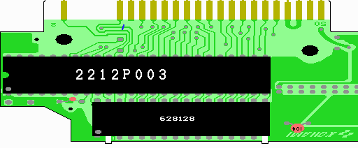

８．SRAMの取り付け
いよいよ半田付けです。結構楽しいです。各チップの向きなどは、実体図を参考にして下さい。
SRAMの3〜30ピンが、ＲＯＭのあった場所の1〜28ピンに収まるようにとりつけます。
実際に穴に入れるのは、3〜15、17〜30と32ピンです。
SRAMの１ピンは使いません。2、16ピンは基板の外側に伸ばし、31ピンは水平に伸ばす格好になります。
まず、表の628128の3〜15、17〜30と32ピンを半田付けします。
次に、裏の628128の足が上を向いている3〜15、17〜21、23〜30、32ピンを半田付けします。
多目の半田で表の足と一緒にくっつけます。22ピン同士はつけないことに注意して下さい。
足を上に向けなかった人もほぼ同じです。ただ、ピンの足が長くてケースを閉じるとき邪魔になるので、短く
カットする必要があります。取り付けた時に裏の628128は型番が読めなくなるようになります。
方向を間違えない様に気を付けましょう。
これでSRAMの3〜15、17〜21、23〜30、32番ピンの接続が完了しました。
次に表と裏のSRAMの2ピン同士、16ピン同士をつなげます。基板の外側で基板に触れないようにして
ピン同士を半田でくっつけてください。
これで回路図の緑色でかかれた部分ができました。

 次へ
次へ